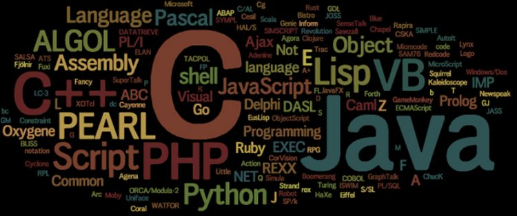

Bienvenid@ a el lenguaje de programacion
Un ámbito conocido por muchos en lo relacionado con la tecnología son los lenguajes de programación. Ellos son los encargados de hacer funcionar lo que conocemos como páginas web, apps, softwares y otros elementos que hoy facilitan nuestro día a día.
Sin los lenguajes de programación, no estaríamos en la era de información en la que nos encontramos y, tal vez, ni existieran muchas de las herramientas hoy conocidas.
¿Te imaginas si un día llegaras a tu trabajo y encontrarás absolutamente todo en mandarín? A menos que domines el idioma, sería casi que imposible desarrollar tus tareas, ¿verdad?
Sucede igual con las máquinas y dispositivos. Ellas requieren de un lenguaje específico para realizar sus funciones.
Por eso, hoy te contaremos qué son los tipos de lenguaje de programación, sus variables y usos principales
.

¿QUE ES UN LENGUAJE DE PROGRAMACION?
Es el medio por el cual se comunica a cualquier dispositivo que lo requiera, una serie de acciones o instrucciones con el fin de lograr un objetivo. Esto se produce con la escritura de un código, que el dispositivo interpreta y que da como resultado una acción o un resultado deseado.
TIPOS DE LENGUAJE DE PROGRAMACION
De acuerdo a su finalidad y herramientas en las que se usa, podemos describir tres clases de lenguajes de programación:
LENGUAJE DE MAQUINA
Es el más primitivo de los códigos y se basa en la numeración binaria, todo en 0 y 1. Este lenguaje es utilizado directamente por máquinas o computadora.

LENGUAJES DE PROGRAMACION DE BAJO NIVEL
Es un lenguaje un poco más fácil de interpretar, pero puede variar de acuerdo a la máquina o computadora que se esté programando.
LENGUAJES DE PROGRAMACION DE ALTO NIVEL
En esta categoría se encuentran los más utilizados. Se usan palabras del inglés lo cual facilita que una persona pueda intervenir más fácil que en los dos anteriores.
Según su generación y orden cronológico, los lenguajes de programación de alto nivel se clasifican en:
LENGUAJES DE PROGRAMACION MAS UTILIZADOS ACTUALMENTE
Existen, en la actualidad, varios lenguajes de programación, pero destacaremos los más importantes de acuerdo con el índice TIOBE (estudio realizado por una empresa holandesa que analiza los lenguajes de programación más usados a nivel mundial).

JAVA
Es el más actualizado actualmente y esto se debe a su simplicidad y legibilidad. No en vano, más de 9 millones de usuarios lo usan y está presente en miles de millones de dispositivos, lo que significa un 15% del total en el mundo frente a otros lenguajes.
Él se ha mantenido a lo largo del siglo XXI en las primeras posiciones, lo cual da una idea de lo importante que ha sido este lenguaje de programación en lo que utilizamos hoy en día.
También es una de las habilidades más requeridas entre desarrolladores, tanto es así que es de el más importante skill que buscan las principales empresas de software y tecnología.
Es utilizado en diferentes segmentos, tales como aplicaciones móviles, herramientas para aprendizaje, hojas de cálculo, entre otras
PYTHON

Un lenguaje de programación multiplataforma y multiparadigma, que también tiene un propósito general. Esto significa que soporta la orientación a objetos, la programación imperativa y funcional.
Su sencillez, legibilidad y similitud con el idioma inglés lo convierten en un gran lenguaje, ideal para principiantes.

C++
Este, sin embargo, tiene un enfoque en desarrollo de aplicaciones y softwares más complejos, que exigen, por ejemplo, una intervención visual. Los programas de diseño gráfico son un ejemplo del uso de este lenguaje de programación.

C#
Conocido también como “C Sharp” entre los programadores, también es una evolución de C y C++. C# es un lenguaje de programación orientado a objetos. Creado en el año 2000, se destaca por su simplicidad, trabaja con aplicaciones bajo el framework .net como el visual studio de Windows. Cuenta con un 7% de uso total a nivel mundial.

HTML
“HTML es un lenguaje de marcado que se utiliza para el desarrollo de páginas de Internet. Se trata de la siglas que corresponden a HyperText Markup Language, es decir, Lenguaje de Marcas de Hipertexto”
